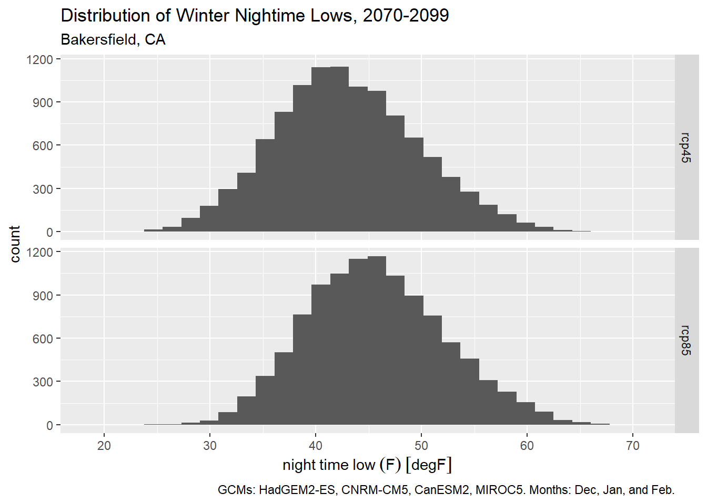
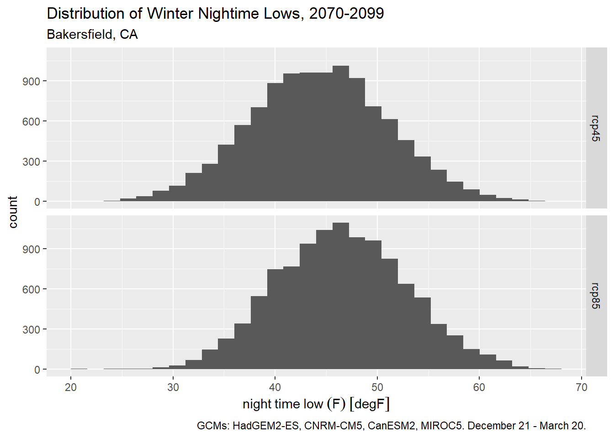
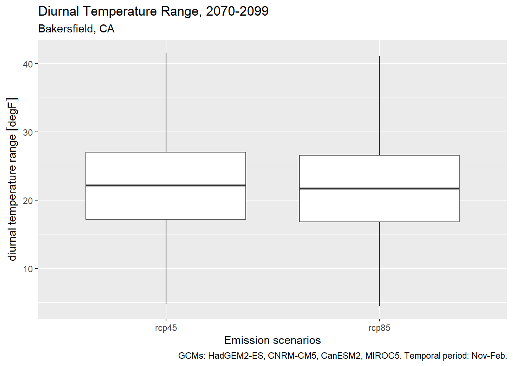

Chapter 4 Methods for Computing Climate Metrics
In this Chapter, we’ll explore some data wrangling techniques that are commonly used in computing climate metrics.
4.1 Load packages
As usual, start by loading a bunch of packages into memory and specifying our package preferences for conflicting function names:
library(caladaptr)
library(units)
library(ggplot2)
library(dplyr)
library(tidyr)
library(lubridate)
library(sf)Set conflicted preferences:
library(conflicted)
conflict_prefer("filter", "dplyr", quiet = TRUE)
conflict_prefer("count", "dplyr", quiet = TRUE)
conflict_prefer("select", "dplyr", quiet = TRUE)
4.2 Fetch Some Sample Data
For the examples in this chapter, we’ll work with late-century daily temperature data for a location near Bakersfield, CA in the southern San Joaquin Valley.
bkrfld_cap <- ca_loc_pt(coords = c(-119.151062, 35.261321)) %>%
ca_gcm(gcms[1:4]) %>%
ca_scenario(c("rcp45", "rcp85")) %>%
ca_period("day") %>%
ca_years(start = 2070, end = 2099) %>%
ca_cvar(c("tasmin", "tasmax"))
bkrfld_cap %>% ca_preflight()## General issues
## - none found
## Issues for querying values
## - none found
## Issues for downloading rasters
## - none foundplot(bkrfld_cap)
Fetch data:
bkrfld_tbl <- bkrfld_cap %>%
ca_getvals_tbl(quiet = TRUE) %>%
mutate(dt = as.Date(dt),
temp_f = units::set_units(val, degF))
head(bkrfld_tbl)## # A tibble: 6 x 9
## id cvar period gcm scenario spag dt val temp_f
## <int> <fct> <fct> <fct> <fct> <fct> <date> [K] [degF]
## 1 1 tasmin day HadGEM2-ES rcp45 none 2070-01-01 278. 41.1
## 2 1 tasmin day HadGEM2-ES rcp45 none 2070-01-02 278. 40.6
## 3 1 tasmin day HadGEM2-ES rcp45 none 2070-01-03 284. 51.7
## 4 1 tasmin day HadGEM2-ES rcp45 none 2070-01-04 276. 37.6
## 5 1 tasmin day HadGEM2-ES rcp45 none 2070-01-05 280. 45.0
## 6 1 tasmin day HadGEM2-ES rcp45 none 2070-01-06 280. 44.5
4.3 Time Slicing
Often an analysis requires you to slice climate data into specific periods that are meaningful for a specific study. For example, water years start on October 1 and run through the following season. Or you might just be interested in the winter months, when tree crops or bugs are particularly sensitive to temperatures. In this section, we’ll look at different techniques for time-slicing climate data.
The general approach is to add a column in the table that identifies the time slice. (If you’re working with rasters, the idea is similar but you add an attribute value to the layer). Once you have the time-slice identifiers in your table, you can easily filter or group on that column to compute summaries for each time-slice.
lubridate is your ally when it comes to extracting date parts. For example to add columns for date parts like year, month, week, and ordinal date, we can use the standard mutate() with date part functions from lubridate:
bkrfld_dtprts_tbl <- bkrfld_tbl %>%
mutate(year = lubridate::year(dt),
month = lubridate::month(dt),
week = lubridate::week(dt),
yday = lubridate::yday(dt)) %>%
select(dt, year, month, week, yday, cvar, gcm, scenario, temp_f)
bkrfld_dtprts_tbl %>% slice(1:20)## # A tibble: 20 x 9
## dt year month week yday cvar gcm scenario temp_f
## <date> <dbl> <dbl> <dbl> <dbl> <fct> <fct> <fct> [degF]
## 1 2070-01-01 2070 1 1 1 tasmin HadGEM2-ES rcp45 41.1
## 2 2070-01-02 2070 1 1 2 tasmin HadGEM2-ES rcp45 40.6
## 3 2070-01-03 2070 1 1 3 tasmin HadGEM2-ES rcp45 51.7
## 4 2070-01-04 2070 1 1 4 tasmin HadGEM2-ES rcp45 37.6
## 5 2070-01-05 2070 1 1 5 tasmin HadGEM2-ES rcp45 45.0
## 6 2070-01-06 2070 1 1 6 tasmin HadGEM2-ES rcp45 44.5
## 7 2070-01-07 2070 1 1 7 tasmin HadGEM2-ES rcp45 40.9
## 8 2070-01-08 2070 1 2 8 tasmin HadGEM2-ES rcp45 47.7
## 9 2070-01-09 2070 1 2 9 tasmin HadGEM2-ES rcp45 50.5
## 10 2070-01-10 2070 1 2 10 tasmin HadGEM2-ES rcp45 46.7
## 11 2070-01-11 2070 1 2 11 tasmin HadGEM2-ES rcp45 39.8
## 12 2070-01-12 2070 1 2 12 tasmin HadGEM2-ES rcp45 42.9
## 13 2070-01-13 2070 1 2 13 tasmin HadGEM2-ES rcp45 35.5
## 14 2070-01-14 2070 1 2 14 tasmin HadGEM2-ES rcp45 34.1
## 15 2070-01-15 2070 1 3 15 tasmin HadGEM2-ES rcp45 39.4
## 16 2070-01-16 2070 1 3 16 tasmin HadGEM2-ES rcp45 43.3
## 17 2070-01-17 2070 1 3 17 tasmin HadGEM2-ES rcp45 44.3
## 18 2070-01-18 2070 1 3 18 tasmin HadGEM2-ES rcp45 45.5
## 19 2070-01-19 2070 1 3 19 tasmin HadGEM2-ES rcp45 49.5
## 20 2070-01-20 2070 1 3 20 tasmin HadGEM2-ES rcp45 44.8
To plot the distribution of winter time daily minimum temperatures (i.e., to identify frost days), we could use the month column to get only dates in December, January, and February:
bkrfld_wintrmth_lows_tbl <- bkrfld_dtprts_tbl %>%
filter(cvar == "tasmin", month %in% c(12, 1, 2))
table(bkrfld_wintrmth_lows_tbl$month)##
## 1 2 12
## 7440 6776 7440
Plot histogram:
ggplot(bkrfld_wintrmth_lows_tbl, aes(x=temp_f)) +
geom_histogram() +
facet_grid(scenario ~ .) +
labs(title = "Distribution of Winter Nightime Lows, 2070-2099",
subtitle = "Bakersfield, CA",
caption = paste0("GCMs: ", paste(gcms[1:4], collapse = ", "), ". Months: Dec, Jan, and Feb."),
x = "night time low (F)", y = "count")## `stat_bin()` using `bins = 30`. Pick better value with `binwidth`.
If we want use the standard definition of the winter season, we could alternately filter winter days by their ordinal date number (aka Julian date). Winter starts on December 21 (day 355 of non-leap years) and ends on March 20 (day 79).
bkrfld_wintrssn_tbl <- bkrfld_dtprts_tbl %>%
filter(cvar == "tasmin", yday >= 355 | yday <= 79)
ggplot(bkrfld_wintrssn_tbl, aes(x=temp_f)) +
geom_histogram() +
facet_grid(scenario ~ .) +
labs(title = "Distribution of Winter Nightime Lows, 2070-2099",
subtitle = "Bakersfield, CA",
caption = paste0("GCMs: ", paste(gcms[1:4], collapse = ", "), ". December 21 - March 20."),
x = "night time low (F)", y = "count")## `stat_bin()` using `bins = 30`. Pick better value with `binwidth`.
Time slices can also be used for grouping. The following expression computes the average nightly low for the summer months for each RCP (all GCMs and years combined):
bkrfld_dtprts_tbl %>%
filter(month %in% 6:8, cvar == "tasmin") %>%
group_by(month, scenario) %>%
summarise(avg_temp = mean(temp_f), .groups = "drop") %>%
mutate(month = month.name[month]) %>%
tidyr::pivot_wider(id_cols = month, names_from = scenario, values_from = avg_temp)## # A tibble: 3 x 3
## month rcp45 rcp85
## <chr> [degF] [degF]
## 1 June 68.1 71.5
## 2 July 74.1 78.0
## 3 August 73.8 77.8
Sometimes the time period of interest spans two calendar years. A water year for example starts on October 1 and goes thru the end of September the following year. Some agricultural periods (such as winter dormancy) may also start in the fall and continue into the new year.
Slicing your data by a time period that spans calendar years is done in the same manner - you add a column to the table for period identifier. Below we add a column for water year (which conventionally are designated by the calendar year in which it ends):
bkrfld_wtryr_tbl <- bkrfld_tbl %>%
mutate(water_yr = year(dt) + if_else(month(dt) >= 10, 1, 0)) %>%
select(dt, water_yr, cvar, gcm, scenario, temp_f)
bkrfld_wtryr_tbl %>% sample_n(10)## # A tibble: 10 x 6
## dt water_yr cvar gcm scenario temp_f
## <date> <dbl> <fct> <fct> <fct> [degF]
## 1 2089-12-08 2090 tasmax CNRM-CM5 rcp45 63.6
## 2 2086-10-29 2087 tasmin MIROC5 rcp85 55.7
## 3 2076-10-05 2077 tasmin CNRM-CM5 rcp85 52.3
## 4 2085-08-15 2085 tasmin HadGEM2-ES rcp45 69.1
## 5 2074-10-15 2075 tasmax CNRM-CM5 rcp45 95.7
## 6 2097-07-18 2097 tasmax CNRM-CM5 rcp45 94.6
## 7 2073-03-08 2073 tasmin MIROC5 rcp45 46.2
## 8 2092-05-29 2092 tasmin MIROC5 rcp85 69.4
## 9 2095-07-28 2095 tasmax MIROC5 rcp45 96.0
## 10 2093-10-04 2094 tasmin MIROC5 rcp85 58.8
4.4 Daily Climate Metrics
Many climate analyses require metrics computed on a daily time scale. For example, to see how frost exposure might change over time, we may have to look at the lowest daily temperature. This presents a small conundrum, because climate models are not weather forecasts, and best practices tell us that we don’t look at less than 30 years. But it would be silly to average the daily low temperatures by month or year and use that as a proxy for frost exposure.
The general approach in these cases is compute the daily metrics as if you were dealing with observed data, but then to aggregate the metrics over bigger periods of time and space. For example, you could classify each individual day in frost / non-frost, and then count the number of predicted frost days over a 30-year interval.
4.5 Diurnal Temperature Range
Diurnal Temperature Range (DTR) is the difference between daily min and max temperature (Parker et al. 2022). The magnitude of DTR can impact wine grape development and taste. In the example below, we calculate DTR from November thru February.
The first step is to separate the minimum and maximum daily temperatures into separate columns:
bkrfld_wide_tbl <- bkrfld_tbl %>%
filter(month(dt) %in% c(11,12,1,2)) %>%
tidyr::pivot_wider(id_cols = c(dt, gcm, scenario), names_from = cvar, values_from = temp_f)
head(bkrfld_wide_tbl)## # A tibble: 6 x 5
## dt gcm scenario tasmin tasmax
## <date> <fct> <fct> [degF] [degF]
## 1 2070-01-01 HadGEM2-ES rcp45 41.1 67.2
## 2 2070-01-02 HadGEM2-ES rcp45 40.6 63.2
## 3 2070-01-03 HadGEM2-ES rcp45 51.7 67.0
## 4 2070-01-04 HadGEM2-ES rcp45 37.6 53.9
## 5 2070-01-05 HadGEM2-ES rcp45 45.0 54.8
## 6 2070-01-06 HadGEM2-ES rcp45 44.5 57.9Now we can compute DTR:
bkrfld_dtr_tbl <- bkrfld_wide_tbl %>%
mutate(dtr = tasmax - tasmin)
bkrfld_dtr_tbl %>% head()## # A tibble: 6 x 6
## dt gcm scenario tasmin tasmax dtr
## <date> <fct> <fct> [degF] [degF] [degF]
## 1 2070-01-01 HadGEM2-ES rcp45 41.1 67.2 26.1
## 2 2070-01-02 HadGEM2-ES rcp45 40.6 63.2 22.7
## 3 2070-01-03 HadGEM2-ES rcp45 51.7 67.0 15.3
## 4 2070-01-04 HadGEM2-ES rcp45 37.6 53.9 16.3
## 5 2070-01-05 HadGEM2-ES rcp45 45.0 54.8 9.85
## 6 2070-01-06 HadGEM2-ES rcp45 44.5 57.9 13.4
We can show the results with a box plot:
ggplot(bkrfld_dtr_tbl, aes(x=scenario, y = dtr)) +
geom_boxplot() +
labs(title = "Diurnal Temperature Range, 2070-2099",
subtitle = "Bakersfield, CA",
caption = paste0("GCMs: ", paste(gcms[1:4], collapse = ", "), ". Temporal period: Nov-Feb."),
x = "Emission scenarios", y = "diurnal temperature range")
4.6 Daily Threshhold Events
Many climate analyses involve a threshold event, such as temperature above or below a certain value. These tend to be easy to compute using an expression that returns TRUE or FALSE. Subsequently, you can count the number of threshold events using sum() (when you sum logical values TRUEs become 1 and FALSE becomes 0).
Below we compute the number of ‘Hot Days’ per year, where a Hot Day is defined as the maximum temperature over 38 °C (100.4 °F) (Parker et al. 2022). We need to keep gcm and scenario as we’ll be grouping on those columns next.
bkrfld_hotday_tbl <- bkrfld_tbl %>%
filter(cvar == "tasmax") %>%
mutate(hotday_yn = temp_f >= units::set_units(38, degC),
year = year(dt)) %>%
select(dt, year, cvar, scenario, gcm, temp_f, hotday_yn)
bkrfld_hotday_tbl %>% head()## # A tibble: 6 x 7
## dt year cvar scenario gcm temp_f hotday_yn
## <date> <dbl> <fct> <fct> <fct> [degF] <lgl>
## 1 2070-01-01 2070 tasmax rcp45 HadGEM2-ES 67.2 FALSE
## 2 2070-01-02 2070 tasmax rcp45 HadGEM2-ES 63.2 FALSE
## 3 2070-01-03 2070 tasmax rcp45 HadGEM2-ES 67.0 FALSE
## 4 2070-01-04 2070 tasmax rcp45 HadGEM2-ES 53.9 FALSE
## 5 2070-01-05 2070 tasmax rcp45 HadGEM2-ES 54.8 FALSE
## 6 2070-01-06 2070 tasmax rcp45 HadGEM2-ES 57.9 FALSE
Now we can group by year and scenario to compare how the average number of hot days per year looks for each RCP.
bkrfld_numhd_tbl <- bkrfld_hotday_tbl %>%
group_by(year, scenario, gcm) %>%
summarise(num_hotday = sum(hotday_yn))## `summarise()` has grouped output by 'year', 'scenario'. You can override using
## the `.groups` argument.bkrfld_numhd_tbl %>% head()## # A tibble: 6 x 4
## # Groups: year, scenario [2]
## year scenario gcm num_hotday
## <dbl> <fct> <fct> <int>
## 1 2070 rcp45 CanESM2 75
## 2 2070 rcp45 CNRM-CM5 58
## 3 2070 rcp45 HadGEM2-ES 91
## 4 2070 rcp45 MIROC5 70
## 5 2070 rcp85 CanESM2 88
## 6 2070 rcp85 CNRM-CM5 68bkrfld_numhd_tbl %>%
group_by(year, scenario) %>%
summarize(avg_hd = mean(num_hotday), .groups = "drop") %>%
tidyr::pivot_wider(id_cols = year, names_from = scenario, values_from = avg_hd)## # A tibble: 30 x 3
## year rcp45 rcp85
## <dbl> <dbl> <dbl>
## 1 2070 73.5 87.5
## 2 2071 73.2 83
## 3 2072 75 83.5
## 4 2073 77.5 94.2
## 5 2074 83.5 88.5
## 6 2075 77.5 79
## 7 2076 71 87
## 8 2077 65.2 98.2
## 9 2078 70.2 94.8
## 10 2079 82 102
## # ... with 20 more rowsSometimes you want to know the number of threshold events during a particular time of the year. For example tree crops are particularly susceptible to frost damage right after they’ve bloomed.
Let’s compute the number of hot days in June, July and August, which can be particularly bad for nut development. Because we have daily data from 4 GCMs, we have to count the number of hot days for each GCM, and then average those together for each emissions scenario.
bkrfld_sumrhd_tbl <- bkrfld_tbl %>%
filter(cvar == "tasmax", month(dt) %in% c(6,7,8)) %>%
mutate(hd = temp_f >= units::set_units(38, degC),
year = year(dt)) %>%
select(dt, year, cvar, scenario, gcm, temp_f, hd)
bkrfld_sumrhd_tbl %>% head()## # A tibble: 6 x 7
## dt year cvar scenario gcm temp_f hd
## <date> <dbl> <fct> <fct> <fct> [degF] <lgl>
## 1 2070-06-01 2070 tasmax rcp45 HadGEM2-ES 79.8 FALSE
## 2 2070-06-02 2070 tasmax rcp45 HadGEM2-ES 77.7 FALSE
## 3 2070-06-03 2070 tasmax rcp45 HadGEM2-ES 74.7 FALSE
## 4 2070-06-04 2070 tasmax rcp45 HadGEM2-ES 80.6 FALSE
## 5 2070-06-05 2070 tasmax rcp45 HadGEM2-ES 86.3 FALSE
## 6 2070-06-06 2070 tasmax rcp45 HadGEM2-ES 92.9 FALSE
bkrfld_numsumrhd_tbl <- bkrfld_sumrhd_tbl %>%
group_by(year, scenario, gcm) %>%
summarise(num_sumrhd = sum(hd), .groups = "drop")
bkrfld_numsumrhd_tbl %>% head()## # A tibble: 6 x 4
## year scenario gcm num_sumrhd
## <dbl> <fct> <fct> <int>
## 1 2070 rcp45 CanESM2 64
## 2 2070 rcp45 CNRM-CM5 43
## 3 2070 rcp45 HadGEM2-ES 71
## 4 2070 rcp45 MIROC5 55
## 5 2070 rcp85 CanESM2 69
## 6 2070 rcp85 CNRM-CM5 55
bkrfld_avgnumsumrhd_tbl <- bkrfld_numsumrhd_tbl %>%
group_by(year, scenario) %>%
summarise(avg_num_sumrhd = mean(num_sumrhd), .groups = "drop")
bkrfld_avgnumsumrhd_tbl %>% head()## # A tibble: 6 x 3
## year scenario avg_num_sumrhd
## <dbl> <fct> <dbl>
## 1 2070 rcp45 58.2
## 2 2070 rcp85 66.5
## 3 2071 rcp45 56.8
## 4 2071 rcp85 59
## 5 2072 rcp45 60.5
## 6 2072 rcp85 62.2
bkrfld_avgnumsumrhd_tbl %>%
tidyr::pivot_wider(id_cols = year, names_from = scenario, values_from = avg_num_sumrhd)## # A tibble: 30 x 3
## year rcp45 rcp85
## <dbl> <dbl> <dbl>
## 1 2070 58.2 66.5
## 2 2071 56.8 59
## 3 2072 60.5 62.2
## 4 2073 65 72
## 5 2074 63.5 69.2
## 6 2075 59.8 55.2
## 7 2076 56.5 70
## 8 2077 54 70
## 9 2078 59 72.5
## 10 2079 59.8 74.2
## # ... with 20 more rows
4.7 Counting Consecutive Events
“Heat spells,” “cold spells,” and “extreme precipitation” events are all defined as consecutive days of a threshold event. The number of consecutive days may vary, but the general technique for identifying ‘spells’ is
Run an expression that tests whether the threshhold was passed for each day, returning a series TRUE or FALSE values.
Pass the TRUE / FALSE values into the rle(), which identifies ‘runs’ of TRUE and FALSE values
Count the number of runs that meet the minimum duration
To illustrate this, take the following series of 30 temperature values. We’ll compute the number of heat spells where the temperature was 100 or more for three or more days in a row:
x_temp <- c(96,97,101,98,100,102,101,99,94,89,97,102,104,101,103,99,92,94,88,90,98,101,99,103,104,102,98,97,98,99)Step 1 is to check to see if each value exceeds the threshold):
x_hot <- x_temp >= 100
x_hot## [1] FALSE FALSE TRUE FALSE TRUE TRUE TRUE FALSE FALSE FALSE FALSE TRUE
## [13] TRUE TRUE TRUE FALSE FALSE FALSE FALSE FALSE FALSE TRUE FALSE TRUE
## [25] TRUE TRUE FALSE FALSE FALSE FALSENext, feed the 30 TRUE/FALSE values into rle() (run-length encoding):
rle_lst <- rle(x_hot)
rle_lst## Run Length Encoding
## lengths: int [1:11] 2 1 1 3 4 4 6 1 1 3 ...
## values : logi [1:11] FALSE TRUE FALSE TRUE FALSE TRUE ...rle() returns a list with two elements. Both elements are vectors of the same length. The lengths element contains the number of contiguous identical elements found in a ‘run’ in the original data. The values element contains the corresponding value of the run (in this case TRUE/FALSE values. Using this info, we can see our original data started with two FALSE values, followed by one TRUE value, followed by one FALSE value, followed by three TRUE values, and so on.
To count the number of ‘TRUE’ runs (aka spells) equal to or longer than n days, we can apply a simple expression:
sum(rle_lst$values & rle_lst$lengths >= 3)## [1] 3
Using these techniques, below we compute the number of heat spells where the temperature was 100 °F or more for three or more days in a row:
bkrfld_sumrhd_tbl <- bkrfld_tbl %>%
filter(cvar == "tasmax", month(dt) %in% c(6,7,8)) %>%
mutate(hd = temp_f >= units::set_units(38, degC),
year = year(dt)) %>%
select(dt, year, cvar, scenario, gcm, temp_f, hd)
bkrfld_sumrhd_tbl %>% head()## # A tibble: 6 x 7
## dt year cvar scenario gcm temp_f hd
## <date> <dbl> <fct> <fct> <fct> [degF] <lgl>
## 1 2070-06-01 2070 tasmax rcp45 HadGEM2-ES 79.8 FALSE
## 2 2070-06-02 2070 tasmax rcp45 HadGEM2-ES 77.7 FALSE
## 3 2070-06-03 2070 tasmax rcp45 HadGEM2-ES 74.7 FALSE
## 4 2070-06-04 2070 tasmax rcp45 HadGEM2-ES 80.6 FALSE
## 5 2070-06-05 2070 tasmax rcp45 HadGEM2-ES 86.3 FALSE
## 6 2070-06-06 2070 tasmax rcp45 HadGEM2-ES 92.9 FALSEWe have to be a little creative to apply rle() in a data frame that has many time series in it (e.g., multiple years, GCMs, and emission scenarios). Each of the series needs to be fed into rle() individually, and the list returned by rle() will have different lengths. But what we can do is set up a list structure to store the results of rle().
First, we create a grouped tibble. A group tibble is still a tibble, but also has groups of rows invisibly defined. As we shall see shortly, other functions know what to do with those groups.
bkrfld_grps_tbl <- bkrfld_sumrhd_tbl %>%
group_by(year, scenario, gcm) %>%
arrange(dt)
glimpse(bkrfld_grps_tbl)## Rows: 22,080
## Columns: 7
## Groups: year, scenario, gcm [240]
## $ dt <date> 2070-06-01, 2070-06-01, 2070-06-01, 2070-06-01, 2070-06-01, ~
## $ year <dbl> 2070, 2070, 2070, 2070, 2070, 2070, 2070, 2070, 2070, 2070, 2~
## $ cvar <fct> tasmax, tasmax, tasmax, tasmax, tasmax, tasmax, tasmax, tasma~
## $ scenario <fct> rcp45, rcp45, rcp45, rcp45, rcp85, rcp85, rcp85, rcp85, rcp45~
## $ gcm <fct> HadGEM2-ES, CNRM-CM5, CanESM2, MIROC5, HadGEM2-ES, CNRM-CM5, ~
## $ temp_f [degF] 79.84528 [degF], 106.15573 [degF], 90.13398 [degF], 95.24855~
## $ hd <lgl> FALSE, TRUE, FALSE, FALSE, FALSE, FALSE, FALSE, TRUE, FALSE, ~
Next, we have to write a function that we can feed into group_modify(). If you read the documentation for group_modify(), it says the first two arguments of the function should accept i) a group of rows (as a tibble), ii) the properties of the group (e.g., which year, scenario, and gcm) as a 1-row tibble. our function should also return a tibble, that will be stacked for all the groups. In addition, group_modify() will also automatically include columns for the grouping variables.
In our case, all we need is the number of heatspells so the function only has to return a 1x1 tibble.
num_heatspells <- function(data_tbl, key_tbl, num_days = 3) {
## Feed the hd column into rle()
rle_lst <- rle(data_tbl$hd)
## Return a tibble with one row
tibble(num_spells = sum(rle_lst$values & rle_lst$lengths >= num_days))
}
Now we can apply this function to every group:
bkrfld_numspells_tbl <- bkrfld_grps_tbl %>%
group_modify(.f = num_heatspells, num_days = 3)
bkrfld_numspells_tbl %>% head()## # A tibble: 6 x 4
## # Groups: year, scenario, gcm [6]
## year scenario gcm num_spells
## <dbl> <fct> <fct> <int>
## 1 2070 rcp45 CanESM2 7
## 2 2070 rcp45 CNRM-CM5 6
## 3 2070 rcp45 HadGEM2-ES 5
## 4 2070 rcp45 MIROC5 5
## 5 2070 rcp85 CanESM2 3
## 6 2070 rcp85 CNRM-CM5 6Lastly, we can compute the average number of heatspells per emissions scenario:
bkrfld_numspells_tbl %>%
group_by(scenario) %>%
summarise(avg_spells = mean(num_spells)) ## # A tibble: 2 x 2
## scenario avg_spells
## <fct> <dbl>
## 1 rcp45 4.79
## 2 rcp85 3.98